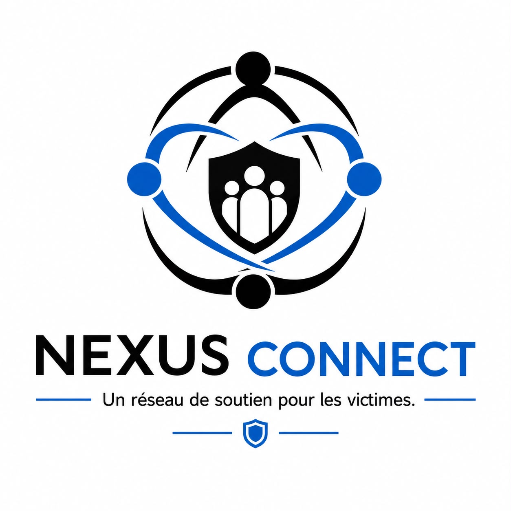

// nexus connect
Une victime n'a pas seulement besoin de preuves. Elle a besoin d'être entourée.
Nexus Connect est le réseau humain de l'association : des professionnels, des associations, des bénévoles et des entreprises qui mettent leurs compétences et leur expérience au service des victimes.

// qui compose le réseau ?
Chaque compétence compte, chaque expérience aussi
Professionnels
Avocats, thérapeutes, médecins, travailleurs sociaux : un accès facilité aux compétences dont les victimes ont besoin.
Associations
Des structures partenaires qui unissent leurs forces plutôt que de travailler chacune de leur côté.
Bénévoles
Des personnes qui donnent de leur temps, de leur écoute — parfois parce qu'elles sont elles-mêmes passées par là.
Entreprises
Des partenaires qui soutiennent le projet par leurs moyens, leurs services ou leur visibilité.
// ce que le réseau apporte
Un accompagnement concret, de bout en bout
- Orientation : savoir enfin vers qui se tourner, sans errer de service en service.
- Accompagnement dans les démarches : ne plus affronter seul·e les procédures administratives et judiciaires.
- Accès aux professionnels compétents : être mis·e en relation avec les bonnes personnes, au bon moment.
- Soutien humain : retrouver la force d'avancer grâce à un entourage qui comprend.
connect> réseau --composition
professionnels ... juridique · santé · social
associations ..... partenaires terrain
bénévoles ........ écoute · expérience
entreprises ...... soutien · moyens
connect> ensemble, on est plus forts_
Vous voulez mettre vos compétences au service des victimes ?
Professionnel·le, bénévole, association ou entreprise — parlons-en.